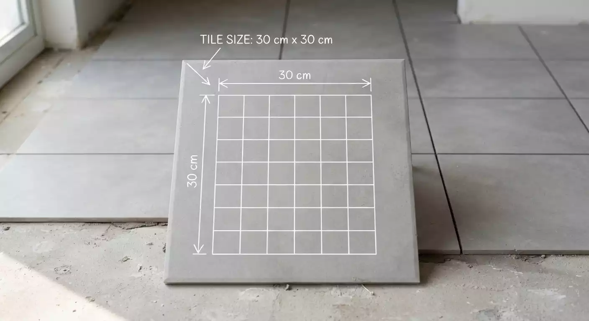

Small format
30 × 30 cm
A compact square tile that can work well in smaller areas and spaces where more grout lines or a detailed pattern are desired.
Common uses
- Small rooms and utility areas
- Compact balconies
- Decorative floor layouts
Consider: More grout lines may mean more cleaning and maintenance.